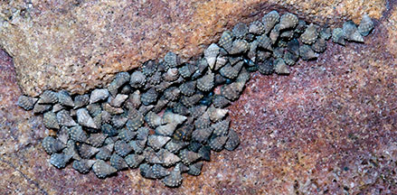
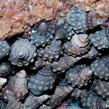
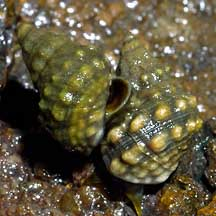
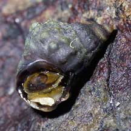
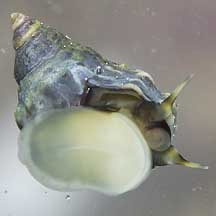

|
|
| shelled snails text index | photo index |
| Phylum Mollusca > Class Gastropoda > Family Littorinidae |
| Knobbly
periwinkle snail Echinolittorina malaccana Family Littorinidae updated Aug 2020 Where seen? This tiny snail with a knobbly shell is sometimes seen on some of our rocky shores. In groups on boulders near the high water mark, often wedged into crevices and cracks at low tide. It was previously known as Nodilittorina trochoides and Nodilittorina pyramidalis. Features: 0.8-1cm. Shell thin with spirals of tiny knobs. Colours variable, often bleached white. Operculum thin, circular, made of a horn-like material. Tiny but tough: This tiny snail is able to withstand high temperatures. It is even hardier than other kinds of periwinkles. It is believed that the knobbly texture of the shell helps to keep the animal cool. It is often found so high up on the rocks that it is only wet for a few hours for the few days of high spring tides every two weeks or so. This tough snail feeds only during these high spring tides or perhaps when it rains. |
 St. John's Island, Feb 11 |
 |
 Lazarus Island, Jul 04 |
 Chek Jawa, May 05 |
 Chek Jawa, May 05 |
| Human uses: Surprisingly, even though it is so tiny, this snail is said to be collected for food and the shell trade especially in Vietnam and the Gulf of Thailand. |
| Knobbly periwinkle snails on Singapore shores |
On wildsingapore
flickr
|
Links
References
|